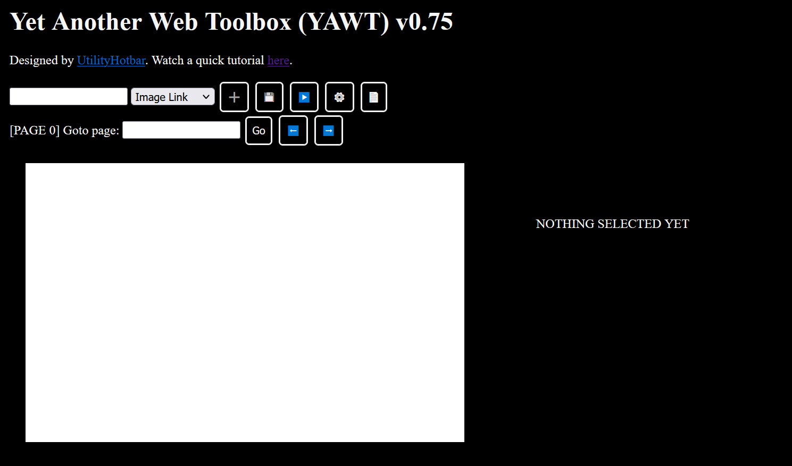
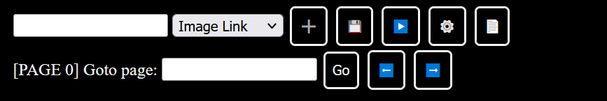
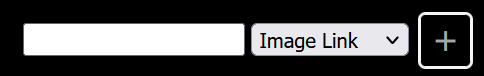
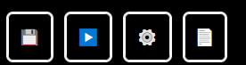
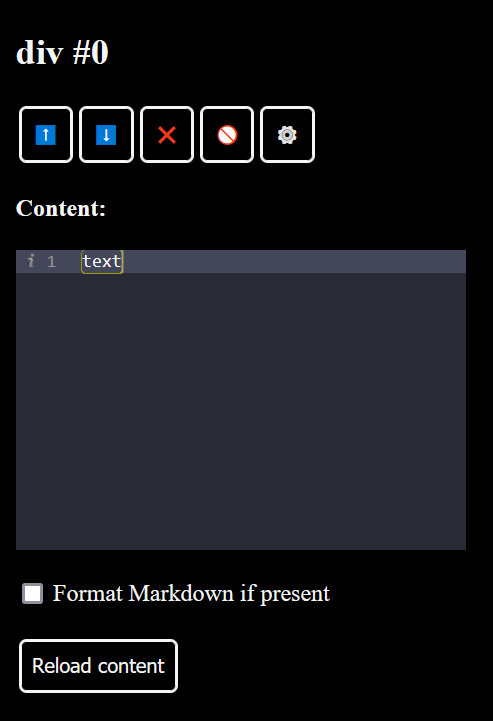

Help
You should see this page when you first load up YAWT. The large white box is the display area (#display-area), where you will create your applet.
1. Control Panel
The control panel houses most of the tools you will use to interact with the project.
1.1 Adding Elements
Use the drop-down menu to pick the type of element you wish to add (Image Link, Youtube Link, Text, Button). Use the input box to put the text for the text or button elements or link to the video/image. When you're ready, press the ➕ button to add the element to the display. Once you do, the element will appear in the display area. Click and drag to move it and click and drag the edge of the element to resize it.
1.2 Other Controls
- 💾 - Save your project to your browser's local storage and exporting it to the exported data textbox at the bottom of the screen.
- ▶️ - Save and view your project.
- ⚙️ - Edit document-wide css and javascript.
- 📄 - Add page to project.
1.3 Page Controls

All projects start on page 0. Pressing the 📄 button on the row above adds a new page and switches to it automatically. Use the ⬅️ and ➡️ buttons to flip betweeen pages, or the "Goto page" box to go to a specific page.
Inspector Pane
Click on any element in the display area to inspect it. Different elements have different properties but the top row of buttons remain constant for all elements:
- ⬆️⬇️ - Move the element up or down the visual hierarchy.
- ❌ - Delete element. You cannot reverse this action!
- 🚫 - Deselect element.
- ⚙️ - Edit element-specific css.
Helper Functions
These are functions that may help you when creating your project
change_page()- Go to a specific page. For example, if you set the onclick function of a button to change_page(1), that button will change the display area to page 1 when you view your project.save_page()- Save contents of the page.